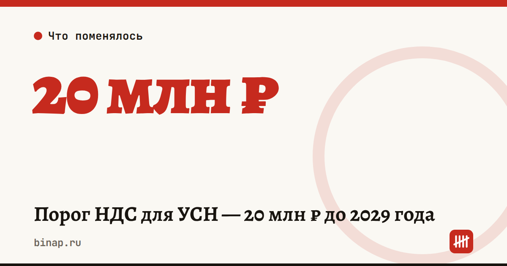

Порог НДС для УСН — 20 млн ₽ до 2029 года

Хорошая новость для упрощенцев: порог не будет падать в 2027 году, как планировали раньше.
Президент подписал закон от 04.07.2026 № 228-ФЗ. Он сохраняет порог 20 млн ₽ дохода, до которого бизнес на УСН освобождён от НДС, до конца 2029 года.
- Как планировала налоговая реформа
- Как теперь по закону № 228-ФЗ
Таблица с данными
| Год | План реформы | Закон № 228-ФЗ |
|---|---|---|
| 2026 | 20 млн ₽ | 20 млн ₽ |
| 2027 | 15 млн ₽ | 20 млн ₽ |
| 2028 | 10 млн ₽ | 20 млн ₽ |
| 2029 | 10 млн ₽ | 20 млн ₽ |
Что это значит:
- Доход за 2026 год до 20 млн ₽ — в 2027 году НДС не платите.
- Больше 20 млн ₽ — вы плательщик НДС. Выбор: льготная ставка 5% или 7% без вычетов либо 22% с вычетами входящего НДС.
- Сам лимит для УСН — до 490,5 млн ₽ дохода в год.
Что сделать сейчас: посчитайте доход с января. Если к концу года выходите к 20 млн ₽ — уже в октябре решите со своим бухгалтером, какую ставку НДС выбрать. Покупатели на общей системе будут просить счета с НДС 22%, и это повлияет на цены.